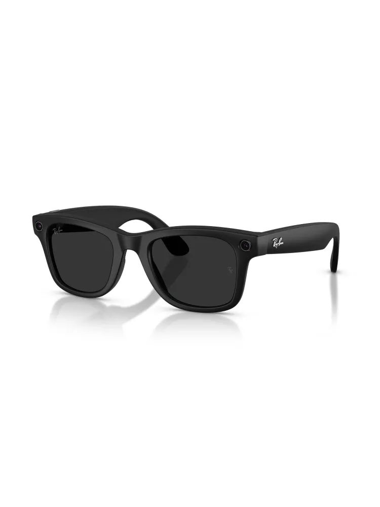

Компьютеры и платформы
Умные очки Meta Ray-Ban Wayfarer GEN2
Это умные очки Ray-Ban Meta Wayfarer второго поколения: обычные очки в классической оправе Wayfarer с камерой, аудио и голосовым помощником Meta AI.

Документация
Официальная страница Ray-Ban Meta Gen 2Официальная карточка Ray-Ban Meta Wayfarer Gen 2Официальные FAQ по Ray-Ban Meta
Характеристики
Модель
Ray-Ban Meta Wayfarer Gen 2
Тип
умные очки
Камера
до 3024×4032 px для фото
Видео
до 2203×2938 px при 30 кадр/с
Память
32 ГБ флеш-памяти
Аккумулятор
до 8 часов на одном заряде
Связь Wi‑Fi
Wi‑Fi 6E
Связь Bluetooth
Bluetooth 5.3
Совместимость
iOS 14.4 / Android 10 и новее
Микрофоны
5 микрофонов
Подробнее
Устройство предназначено для съемки фото и видео, прослушивания аудио и общения с Meta AI без рук. Модель Gen 2 получила улучшенную камеру, увеличенное время работы и обновленную беспроводную связь по сравнению с первым поколением. В линейке Wayfarer доступны разные размеры и варианты линз/оправы, а для работы очки подключаются к смартфону и приложению Meta AI. Это носимая электроника, которая совмещает функции солнцезащитных очков и смарт-устройства для повседневного использования.
hw-2026-059